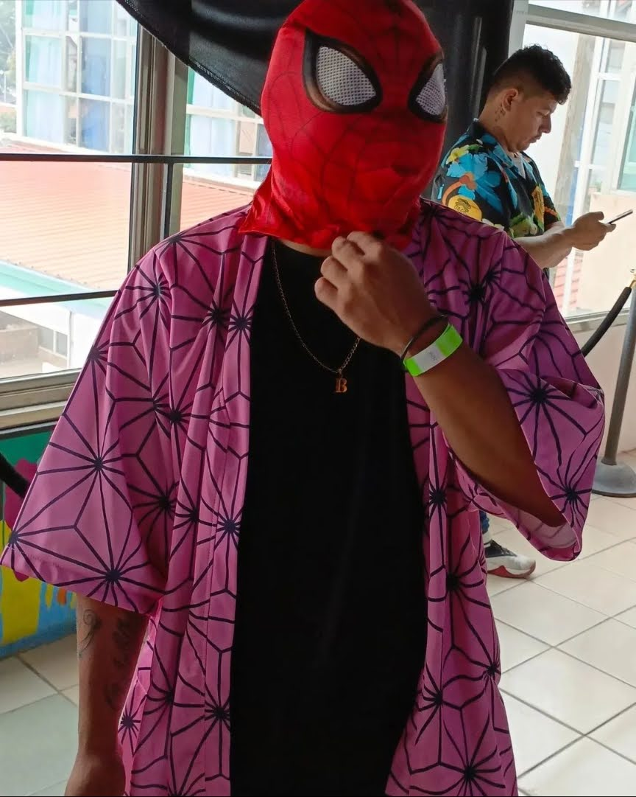

About Me
Brandemir or Brandy for short. Is someone who is quite random yet energetic and can be responsible and dependable. Gets work done, always there to assist friends and/or family.
He is quite the gamer and loves music as well and honestly he tends to slack off a bit but when it's serious, the task at given at hand is completed.
PS: He is secretly not Spooderman